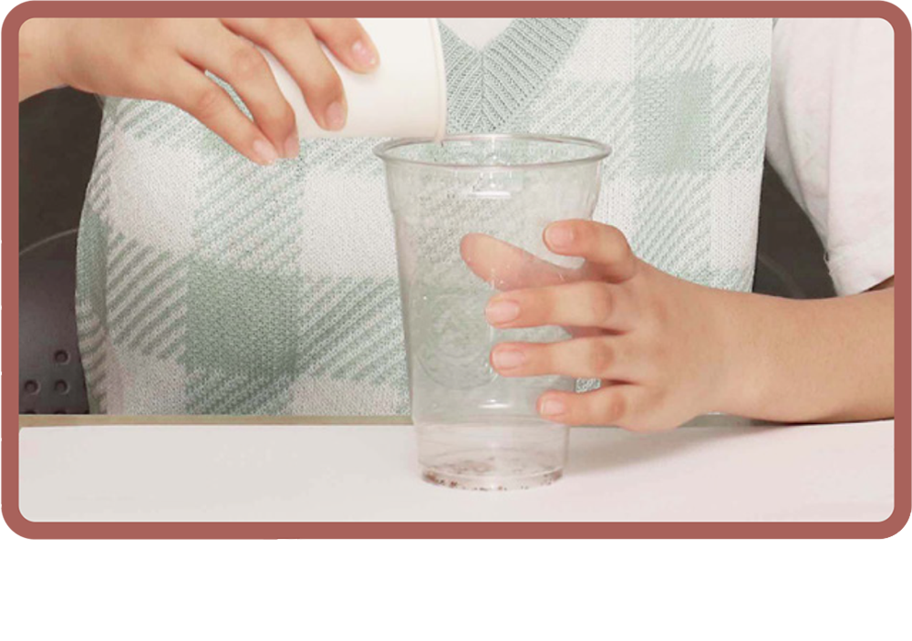
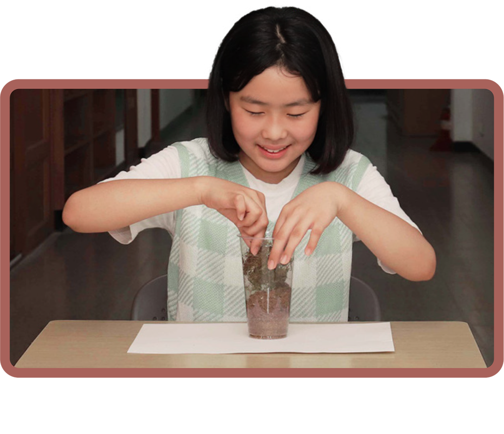
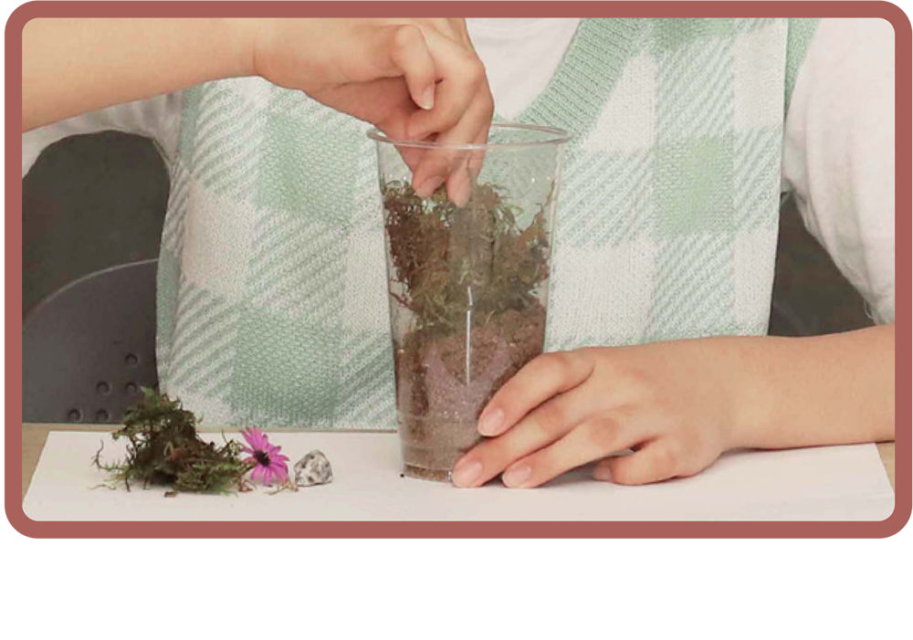
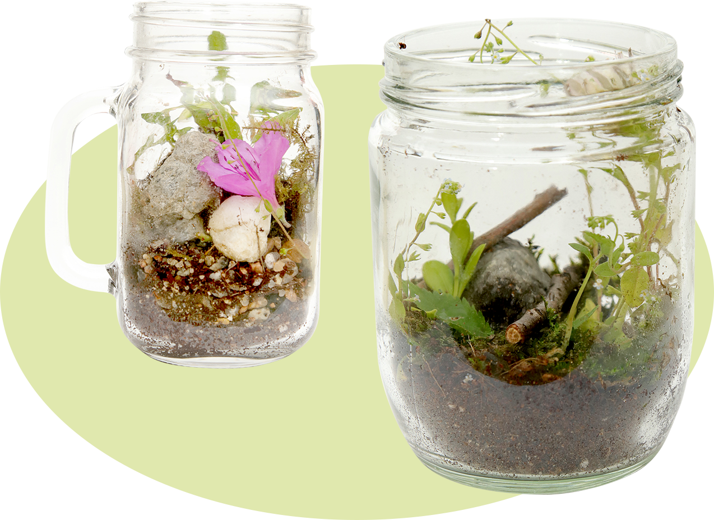

활동하기2 자연물 테라리엄을 만들어 봅시다.

유리병 또는 플라스틱 컵 안에 모래 깔기
테라리엄은 작은 유리병 안에 식물을 기르는
방법이야.
정답

흙을 절반 정도 채우기

자연에서 주운 돌, 나뭇가지, 식물로 장식하기

오니노(학생 작품)
「테라리엄」 (유리병, 돌, 흙, 풀,
이끼, 꽃 등/10×10×23 cm)
김서아(학생 작품)
「테라리엄」(유리병, 돌, 흙, 풀,
이끼, 나뭇가지 등/9×9×17 cm)
반들반들한 촉감의 돌, 까끌까끌한 모래, 보들보들한 이끼와 꽃을 병에 넣어서 테라리엄을 만들었어.
정답